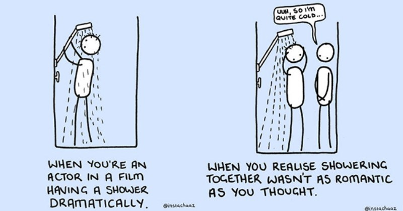

The inner workings of Web Pages
Web pages 101
Imagine a web page as a movie set. The screenplay and scripts are written as the skeleton of how the film should progress. Then you have to decide on how many people you need for the camera crew, which actors to cast and what special effects you think might make this movie a new Blockbuster smasher. Then you have the director, he helps make the decisions if and where needed but his time to shine is when the stage is set, the actors are casted and filming commences. He interprets the script (assuming that he didn't write it this time) and directs the actors through the motions needed in any given scene. he then decides on what special effects to use where and how often (if at all) certain scenes should show up in the film for it all to come together as the final product. Thinking about it though, the film would have worked out just fine with just the crew (cast included), but having a director there in charge of how they all interact and how the film is put together could be the difference between making Blockbuster smasher or just your average movie.

A web page is kind of like that, there are different styles of code that is needed to put it together. The HTML being the skeleton structure, CSS being the cast, crew and special effects, and JavaScript as the director. Like the example above, a web page could just be completely made up of HTML and CSS files and it would still be a fully functioning page. But if you want the it to do more than just be pretty, like have some kind of interactive feature to increase the level of engagement or have a pop up message whenever someone subscribes to your blog, then you want JavaScrpit. To put it more simply, HTML provides a website with its structure, CSS concerns itself with how the page is presented and JavaScrpit deals with how the page behaves when someone interacts with it.
Getting right into it!
You can control many aspects of your website when it comes to the interactive side of things. JavaScript, as mentioned above, is in charge of all of that. A good example is at the bottom of a Trademe listing, you will find something like this:

This count is updated everytime someone clicks on the listing to have a look at the listing. This count uses a "loop" function that was written as part of the page's JavaScript code.
What is loop?
There is a little bit more going on with loop than just a few lines of code on a page. Loop is part of what we call a "function", it is a set of rules that each interaction with the page must go through (if it is there) before it produces a result that we see on the web page. Loops are used to repeatedly run a block of code - until a certain condition is met.
An example of when everyone "loops" in daily life is your shower routine. You walk in, lock the door behind you (or don't...), get undressed (or don't...), jump in, have a quick rinse, lather some soap on you, rinse again and repeat this process the same way daily.
Getting back into functions for a bit. The results of these functions are dependent on which set of rules it has followed to produce the answer that we get. These rules follow a procedure called "control flow", the order of which the rules should be made. The interations go through each set of rules until an answer is found or it has come to the end of it's preset looping point (e.g. stop counting at 50), then and only then does the function stop looping. The control flow basically gives us a guideline of how we should set the rules in the order we want the webpage to go through so that it can get all the information that it needs before it produces an answer.
You are a typical 9am to 5pm worker who only works Monday to Friday. You have two ways of getting to work, cylcing and busing, depending on what the weather is doing that day. Your thought process would first start with what day of the week it is. If it is between Monday and Friday then you would need to go to work. You then look outside to see if the weather is nice, if it is, you'll cycle, if not, you'll take the bus. Now if you change the order of that same train of thought to first check the weather before checking what day of the week it is, you may find yourslef half way to work on a Saturday or Sunday regardless of which method you decided to take to get there.
What is DOM and why is it relevant to all of this?
What is DOM?

Document Object Model or DOM is a programming interface for HTML (the skeleton of your web page). It represents the page so that programs can change the document structure, style, and content. The DOM represents the document as nodes and objects. That way, programming languages can connect to the page.
As seen in the diagram, DOM is often referred to as a tree, working its way from the root to the branches connecting all the nodes and objects that the HTML file contains. Its is a bird's eye view of what the code looks like with the option of inspecting and interacting with each of the branches/elements in the code.
Every web browser has a DOM function embedded into it to varying degrees of power. This means that every web page can be interacted with/manipulated on site. You can do this by right clicking your mouse or trackpad and navigating down to "inspect".
NOTE: If you are feeling mischievous, YES! You can change whatever you see on a web page but keep in mind that these changes are not permanent. They will revert back to what they were when the page is refreshed!
Example of what inspecting a page looks like: